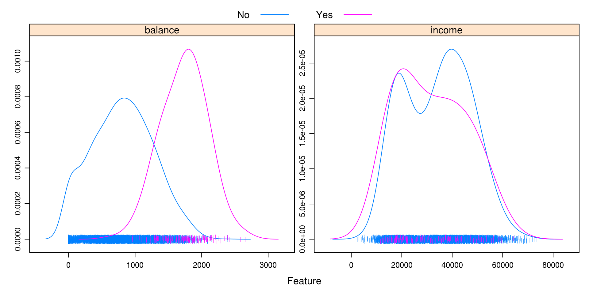
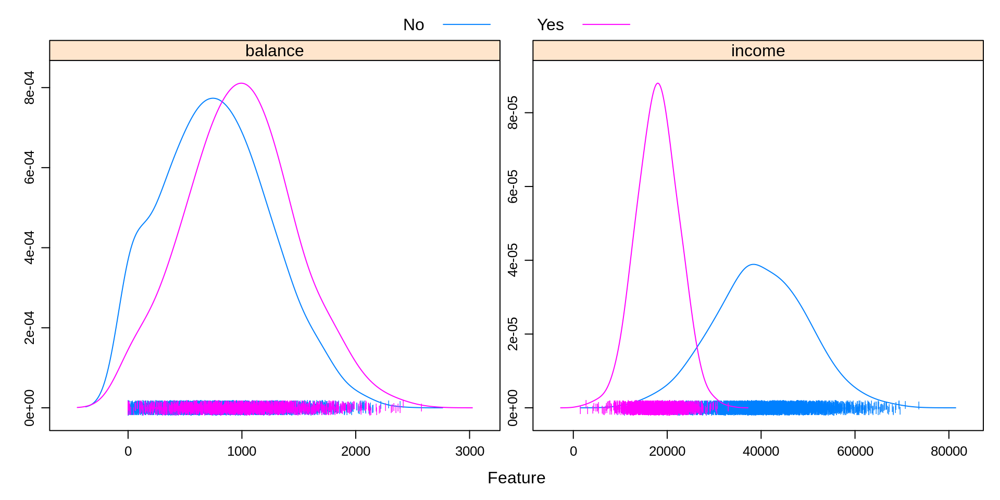
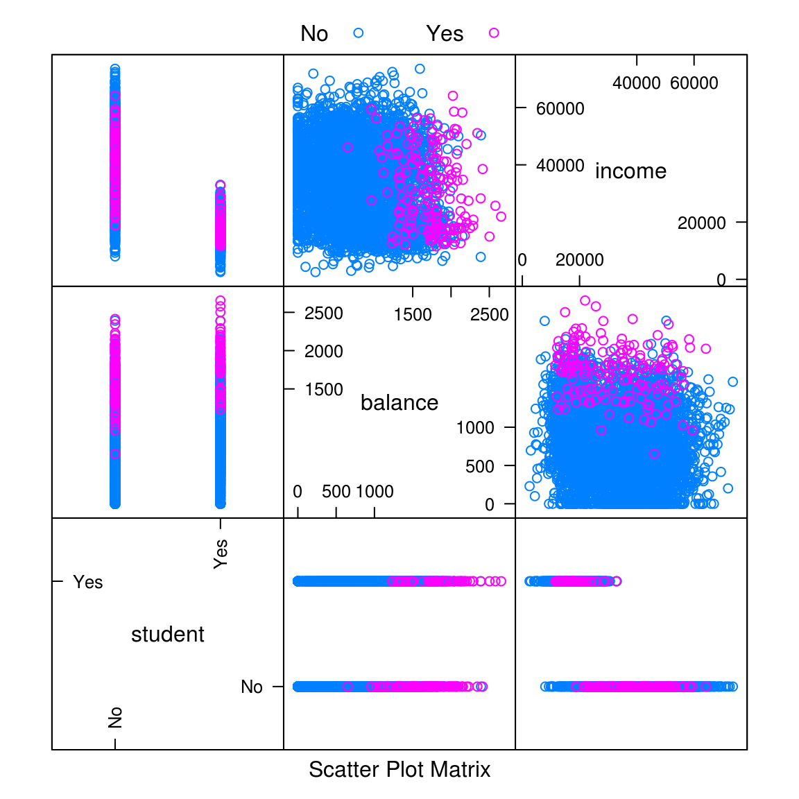
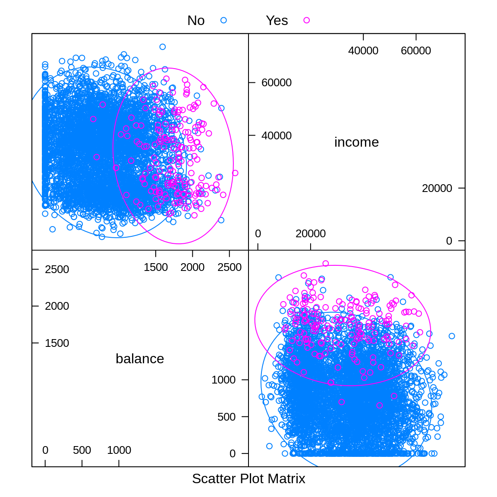

Chapter 9 Overview
Classification is a form of supervised learning where the response variable is categorical, as opposed to numeric for regression. Our goal is to find a rule, algorithm, or function which takes as input a feature vector, and outputs a category which is the true category as often as possible.
That is, the classifier \(\hat{C}(x)\) returns the predicted category \(\hat{y}(X)\).
\[ \hat{y}(x) = \hat{C}(x) \]
To build our first classifier, we will use the Default dataset from the ISLR package.
library(ISLR)
library(tibble)
as_tibble(Default)## # A tibble: 10,000 x 4
## default student balance income
## <fct> <fct> <dbl> <dbl>
## 1 No No 730 44362
## 2 No Yes 817 12106
## 3 No No 1074 31767
## 4 No No 529 35704
## 5 No No 786 38463
## 6 No Yes 920 7492
## 7 No No 826 24905
## 8 No Yes 809 17600
## 9 No No 1161 37469
## 10 No No 0 29275
## # ... with 9,990 more rowsOur goal is to properly classify individuals as defaulters based on student status, credit card balance, and income. Be aware that the response default is a factor, as is the predictor student.
is.factor(Default$default)## [1] TRUEis.factor(Default$student)## [1] TRUEAs we did with regression, we test-train split our data. In this case, using 50% for each.
set.seed(42)
default_idx = sample(nrow(Default), 5000)
default_trn = Default[default_idx, ]
default_tst = Default[-default_idx, ]9.1 Visualization for Classification
Often, some simple visualizations can suggest simple classification rules. To quickly create some useful visualizations, we use the featurePlot() function from the caret() package.
library(caret)A density plot can often suggest a simple split based on a numeric predictor. Essentially this plot graphs a density estimate
\[ \hat{f}_{X_i}(x_i \mid Y = k) \]
for each numeric predictor \(x_i\) and each category \(k\) of the response \(y\).
featurePlot(x = default_trn[, c("balance", "income")],
y = default_trn$default,
plot = "density",
scales = list(x = list(relation = "free"),
y = list(relation = "free")),
adjust = 1.5,
pch = "|",
layout = c(2, 1),
auto.key = list(columns = 2))
Some notes about the arguments to this function:
xis a data frame containing only numeric predictors. It would be nonsensical to estimate a density for a categorical predictor.yis the response variable. It needs to be a factor variable. If coded as0and1, you will need to coerce to factor for plotting.plotspecifies the type of plot, heredensity.scalesdefines the scale of the axes for each plot. By default, the axis of each plot would be the same, which often is not useful, so the arguments here, a different axis for each plot, will almost always be used.adjustspecifies the amount of smoothing used for the density estimate.pchspecifies the plot character used for the bottom of the plot.layoutplaces the individual plots into rows and columns. For some odd reason, it is given as (col, row).auto.keydefines the key at the top of the plot. The number of columns should be the number of categories.
It seems that the income variable by itself is not particularly useful. However, there seems to be a big difference in default status at a balance of about 1400. We will use this information shortly.
featurePlot(x = default_trn[, c("balance", "income")],
y = default_trn$student,
plot = "density",
scales = list(x = list(relation = "free"),
y = list(relation = "free")),
adjust = 1.5,
pch = "|",
layout = c(2, 1),
auto.key = list(columns = 2))
Above, we create a similar plot, except with student as the response. We see that students often carry a slightly larger balance, and have far lower income. This will be useful to know when making more complicated classifiers.
featurePlot(x = default_trn[, c("student", "balance", "income")],
y = default_trn$default,
plot = "pairs",
auto.key = list(columns = 2))
We can use plot = "pairs" to consider multiple variables at the same time. This plot reinforces using balance to create a classifier, and again shows that income seems not that useful.
library(ellipse)
featurePlot(x = default_trn[, c("balance", "income")],
y = default_trn$default,
plot = "ellipse",
auto.key = list(columns = 2))
Similar to pairs is a plot of type ellipse, which requires the ellipse package. Here we only use numeric predictors, as essentially we are assuming multivariate normality. The ellipses mark points of equal density. This will be useful later when discussing LDA and QDA.
9.2 A Simple Classifier
A very simple classifier is a rule based on a boundary \(b\) for a particular input variable \(x\).
\[ \hat{C}(x) = \begin{cases} 1 & x > b \\ 0 & x \leq b \end{cases} \]
Based on the first plot, we believe we can use balance to create a reasonable classifier. In particular,
\[ \hat{C}(\texttt{balance}) = \begin{cases} \text{Yes} & \texttt{balance} > 1400 \\ \text{No} & \texttt{balance} \leq 1400 \end{cases} \]
So we predict an individual is a defaulter if their balance is above 1400, and not a defaulter if the balance is 1400 or less.
simple_class = function(x, boundary, above = 1, below = 0) {
ifelse(x > boundary, above, below)
}We write a simple R function that compares a variable to a boundary, then use it to make predictions on the train and test sets with our chosen variable and boundary.
default_trn_pred = simple_class(x = default_trn$balance,
boundary = 1400, above = "Yes", below = "No")
default_tst_pred = simple_class(x = default_tst$balance,
boundary = 1400, above = "Yes", below = "No")
head(default_tst_pred, n = 10)## [1] "No" "No" "No" "No" "No" "No" "No" "No" "No" "No"9.3 Metrics for Classification
In the classification setting, there are a large number of metrics to assess how well a classifier is performing.
One of the most obvious things to do is arrange predictions and true values in a cross table.
(trn_tab = table(predicted = default_trn_pred, actual = default_trn$default))## actual
## predicted No Yes
## No 4319 29
## Yes 513 139(tst_tab = table(predicted = default_tst_pred, actual = default_tst$default))## actual
## predicted No Yes
## No 4361 23
## Yes 474 142Often we give specific names to individual cells of these tables, and in the predictive setting, we would call this table a confusion matrix. Be aware, that the placement of Actual and Predicted values affects the names of the cells, and often the matrix may be presented transposed.
In statistics, we label the errors Type I and Type II, but these are hard to remember. False Positive and False Negative are more descriptive, so we choose to use these.

The confusionMatrix() function from the caret package can be used to obtain a wealth of additional information, which we see output below for the test data. Note that we specify which category is considered “positive.”
trn_con_mat = confusionMatrix(trn_tab, positive = "Yes")
(tst_con_mat = confusionMatrix(tst_tab, positive = "Yes"))## Confusion Matrix and Statistics
##
## actual
## predicted No Yes
## No 4361 23
## Yes 474 142
##
## Accuracy : 0.9006
## 95% CI : (0.892, 0.9088)
## No Information Rate : 0.967
## P-Value [Acc > NIR] : 1
##
## Kappa : 0.3287
## Mcnemar's Test P-Value : <2e-16
##
## Sensitivity : 0.8606
## Specificity : 0.9020
## Pos Pred Value : 0.2305
## Neg Pred Value : 0.9948
## Prevalence : 0.0330
## Detection Rate : 0.0284
## Detection Prevalence : 0.1232
## Balanced Accuracy : 0.8813
##
## 'Positive' Class : Yes
## The most common, and most important metric is the classification error rate.
\[ \text{err}(\hat{C}, \text{Data}) = \frac{1}{n}\sum_{i = 1}^{n}I(y_i \neq \hat{C}(x_i)) \]
Here, \(I\) is an indicator function, so we are essentially calculating the proportion of predicted classes that match the true class.
\[ I(y_i \neq \hat{C}(x)) = \begin{cases} 1 & y_i \neq \hat{C}(x) \\ 0 & y_i = \hat{C}(x) \\ \end{cases} \]
It is also common to discuss the accuracy, which is simply one minus the error.
Like regression, we often split the data, and then consider Train (Classification) Error and Test (Classification) Error will be used as a measure of how well a classifier will work on unseen future data.
\[ \text{err}_{\texttt{trn}}(\hat{C}, \text{Train Data}) = \frac{1}{n_{\texttt{trn}}}\sum_{i \in \texttt{trn}}^{}I(y_i \neq \hat{C}(x_i)) \]
\[ \text{err}_{\texttt{tst}}(\hat{C}, \text{Test Data}) = \frac{1}{n_{\texttt{tst}}}\sum_{i \in \texttt{tst}}^{}I(y_i \neq \hat{C}(x_i)) \]
Accuracy values can be found by calling confusionMatrix(), or, if stored, can be accessed directly. Here, we use them to obtain error rates.
1 - trn_con_mat$overall["Accuracy"]## Accuracy
## 0.10841 - tst_con_mat$overall["Accuracy"]## Accuracy
## 0.0994Sometimes guarding against making certain errors, FP or FN, are more important than simply finding the best accuracy. Thus, sometimes we will consider sensitivity and specificity.
\[ \text{Sens} = \text{True Positive Rate} = \frac{\text{TP}}{\text{P}} = \frac{\text{TP}}{\text{TP + FN}} \]
tst_con_mat$byClass["Sensitivity"]## Sensitivity
## 0.8606061\[ \text{Spec} = \text{True Negative Rate} = \frac{\text{TN}}{\text{N}} = \frac{\text{TN}}{\text{TN + FP}} \]
tst_con_mat$byClass["Specificity"]## Specificity
## 0.9019648Like accuracy, these can easily be found using confusionMatrix().
When considering how well a classifier is performing, often, it is understandable to assume that any accuracy in a binary classification problem above 0.50, is a reasonable classifier. This however is not the case. We need to consider the balance of the classes. To do so, we look at the prevalence of positive cases.
\[ \text{Prev} = \frac{\text{P}}{\text{Total Obs}}= \frac{\text{TP + FN}}{\text{Total Obs}} \]
trn_con_mat$byClass["Prevalence"]## Prevalence
## 0.0336tst_con_mat$byClass["Prevalence"]## Prevalence
## 0.033Here, we see an extremely low prevalence, which suggests an even simpler classifier than our current based on balance.
\[ \hat{C}(\texttt{balance}) = \begin{cases} \text{No} & \texttt{balance} > 1400 \\ \text{No} & \texttt{balance} \leq 1400 \end{cases} \]
This classifier simply classifies all observations as negative cases.
pred_all_no = simple_class(default_tst$balance,
boundary = 1400, above = "No", below = "No")
table(predicted = pred_all_no, actual = default_tst$default)## actual
## predicted No Yes
## No 4835 165The confusionMatrix() function won’t even accept this table as input, because it isn’t a full matrix, only one row, so we calculate error rates directly. To do so, we write a function.
calc_class_err = function(actual, predicted) {
mean(actual != predicted)
}calc_class_err(actual = default_tst$default,
predicted = pred_all_no)## [1] 0.033Here we see that the error rate is exactly the prevelance of the minority class.
table(default_tst$default) / length(default_tst$default)##
## No Yes
## 0.967 0.033This classifier does better than the previous. But the point is, in reality, to create a good classifier, we should obtain a test error better than 0.033, which is obtained by simply manipulating the prevalences. Next chapter, we’ll introduce much better classifiers which should have no problem accomplishing this task.
9.4 rmarkdown
The rmarkdown file for this chapter can be found here. The file was created using R version 3.4.2. The following packages (and their dependencies) were loaded when knitting this file:
## [1] "ellipse" "caret" "ggplot2" "lattice" "tibble" "ISLR"